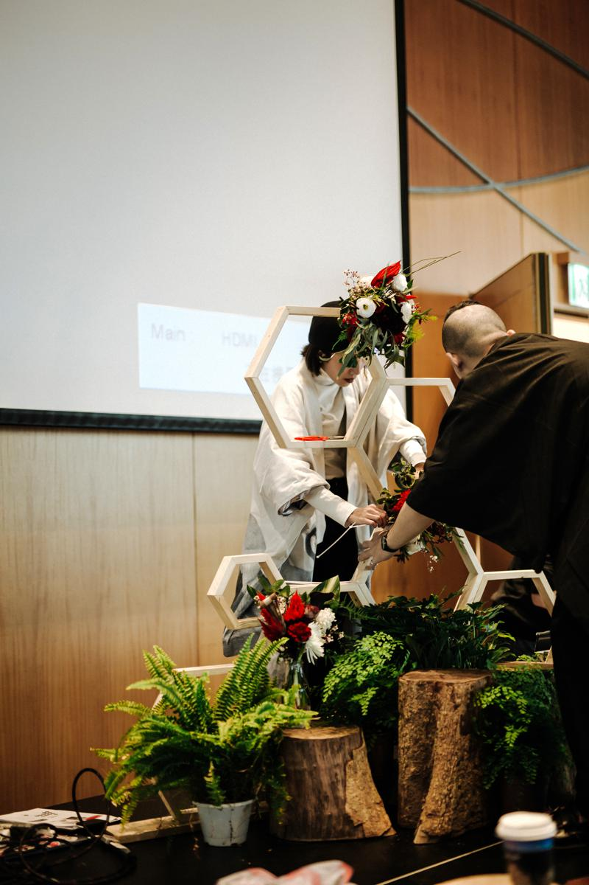
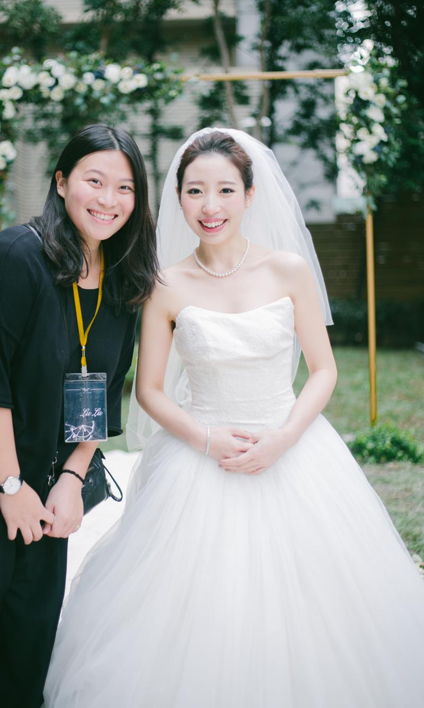

婚顧怎麼辦婚禮？專業婚禮顧問與新人合作辦婚禮

看完拾夢婚顧為你們準備的場地推薦後
是不是很苦惱，每個場地都這麼美，讓人怎麼選！！！
別擔心！這個拾夢婚顧也考慮到了啦～
我要跟你們推薦拾夢最有口碑的規劃服務
——拾夢提供的規劃服務包含——
婚禮場地與相關廠商協尋與溝通
雙語主持 (流程與活動企劃)
婚禮當天 3+1 的駐場人員
——————————————
台灣這麼多婚宴場地各有優缺點，即便網路上滿滿的資訊，也比不上有實際經驗的婚禮團隊
許多異國戀、無法長期待在台灣亦或是工作忙碌新人
要再多花心力和時間於婚禮籌備上，拾夢婚顧真的無法想像會有多勞累
我們服務的宗旨就是讓你們能夠享受屬於自己一生一次婚禮，如果將婚禮交由專業團隊來籌備

喜歡西式婚禮的新人，我們常需要從零開始打造
餐點為場地提供還是另請外燴，外燴又分為自助吧｜合菜｜套餐的形式
婚禮需要的水、電怎麼接，預防下雨的遮棚、餐檯打在哪？這些都是需要考慮到的！
但這一切都可以交給你專屬的婚顧，所有事項都會為你處理好
新人只需要讓我們知道你對婚禮的想法和喜好，還有你們的故事
然後抱持愉悅的心情，期待著屬於你們的婚禮！
婚禮很重要的靈魂人物，絕對不能少了婚禮主持人啦！
許多拾夢的新人都希望自己的婚禮氣氛輕鬆自在
一定千叮嚀萬囑咐：拜託別給我如司儀般的僵硬主持人
拾夢婚顧都懂都知道啦～我們打造輕鬆自在，如 party 般的婚禮
在流程方面也為新人客製化準備，想玩什麼、想做什麼都歡迎跟我們討論
更重要的是！拾夢還提供雙語主持的服務，專業的雙語主持人帶動和諧的現場氣氛，讓我們遠從國外來的親朋好友也能融入其中！

婚禮當天，最貼近新人的就是我們的婚顧小秘書
不用擔心婚紗裙擺影響行走，小秘書都會跟在新娘身邊保護你
常聽人說：婚禮上新人都會餓肚子吃不飽吧！在拾夢你完全可以放心
我們都會幫你準備一些餐點到新娘房讓你偷偷先用餐
怎麼捨得你們餓呢！拾夢婚顧懂那種餓肚子就心情憂鬱的感覺啊～
我們最喜歡的就是把拾夢的新人當王子、公主寵
拾夢經驗豐富的音控，婚禮音控除了推薦適合你們的婚禮音樂
在婚禮當下每個關鍵的進歌點，都由我們來控制
音樂是影響婚禮氣氛非常重要的元素
在大門敞開的那一刻，伴隨著新人步入禮堂
有專業音控師在，絕對能為你營造完美、浪漫的婚禮氛圍

即便是派對般輕鬆的婚禮，也會需要一位場控人員
為你處理當天的大小事，除了最重要的婚禮流程、時間控管
新人、親友、賓客有任何需要幫忙的地方都可以找他
場控通常也是你們專屬的規劃師，知曉所有的細節，聯繫所有廠商
讓婚禮能夠圓滿完成，賓主盡歡是我們的責任！
—— 規劃服務 3+1 統整 ——
｜主持人｜提供雙語流程說明，讓您遠從國外來的親朋好友也能融入婚禮的氣氛之中
｜小秘書｜無須擔憂裙擺不好走，或婚禮場地無提供小管家，我們是新人最貼心的小助手
｜音控｜提供新人最合適的婚禮歌單，豐富的婚禮經驗，營造完美、浪漫的婚禮氣氛
｜場控｜也是新人專屬的婚顧，主要聯繫的窗口，當天控管時間、流程的人員
｜小秘書｜無須擔憂裙擺不好走，或婚禮場地無提供小管家，我們是新人最貼心的小助手
｜音控｜提供新人最合適的婚禮歌單，豐富的婚禮經驗，營造完美、浪漫的婚禮氣氛
｜場控｜也是新人專屬的婚顧，主要聯繫的窗口，當天控管時間、流程的人員